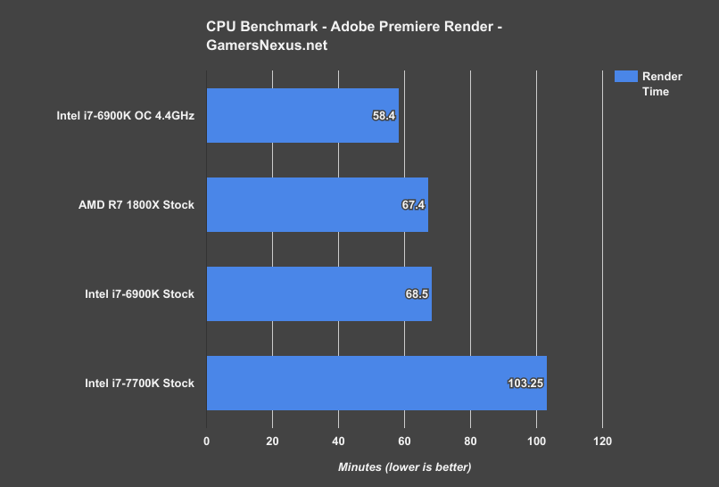

1st Gen (1800X) Performance
Performance with Adobe Premiere
Our video production workload is also a real-world test, pulling from files and export settings that we use every day for GN’s YouTube channel. The test is a render of our EVGA ICX review and includes dozens of audio, video, and image files loaded into it. Color correction, transforms, and other calculations (like Warp Stabilization) are included in the render, meaning that it is a precise representation of what we’d use Adobe Premiere CC for on a daily basis. This also means that the workload is computationally intensive, as the render is doing more than just encoding.
The context of Ryzen and the R7 1800X is that it’s a $500 CPU, and that high-end motherboards can be had for $255. Intel’s i7-6900K is $1000, and high-end motherboards cost $300 plus. Quad-channel memory is lost, but it’s also not all that beneficial in this specific test. The i7-7700K drags behind, completing the render nearly 40 minutes later than the 6900K and 1800X CPUs.
Our encoder settings are configured to 28Mbps target/max bitrate, with a “High” 5.1 profile. We are rendering at 1920x1080 and 60.0FPS (h.264).
Configured to its stock clocks, the AMD R7 1800X completes the render task in 67.4 minutes, with the 6900K completing the video render in 68.5 minutes. If you prefer percentages, that’s a change of 1-2%. In rendering terms, you’d be saving about one minute for every hour of encoding. Ignoring all context, that’s not impressive, but context is what matters.
